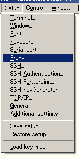

<!DOCTYPE HTML PUBLIC "-//W3C//DTD HTML 4.01//EN"
  "http://www.w3.org/TR/html4/strict.dtd">
<html>
  <head>
    <title>UTF-8 TeraTerm Pro with TTSSH2 Help Index</title>
    <link rel="stylesheet" href="./style.css" type="text/css">
  </head>

  <body>
    <div class="topic"><FONT COLOR="#cc0066">Proxy $B@\B3(B</FONT></div>

    <p>
      UTF-8 TeraTerm Pro with TTSSH2 $B$G<BAu$5$l$?(B Proxy $B@\B3$K$D$$$F2r@b$7$^$9!#(B
    </p>

   <div class="topic"><FONT COLOR="#cc0066">$BA0DsCN<1(B</FONT></div> 

    <p>
      Proxy $B$H$O!"2<?^$N$h$&$K%$%s%?!<%M%C%H4D6-$H(BLAN$B4D6-$,@Z$jN%$5$l$?%M%C%H%o!<%/9=@.$N$H$-!"30It$H$N@\B3$KMQ$$$k<jCJ$G$9!#(B<br>
      <br>
      $B$3$N$h$&$J7ABV$G;H$o$l$k(B Proxy $B$N<oN`$K$O$$$/$D$b$N<oN`$,$"$j!"(BUTF-8 TeraTerm Pro with TTSSH2 $B$G$O<!$N$h$&$J<oN`$N(B Proxy $B$KBP1~$7$F$$$^$9!#(B
    </p>

    <ul>
      <li>HTTP$B!J(BSSH1$B!"(BSSH2 $BMQ!K(B</li>
      <li>TELNET$B!J(Btelnet $BMQ!K(B</li>
      <li>SOCKS4</li>
      <li>SOCKS5</li>
    </ul>

    <div class="topic"><FONT COLOR="#cc0066">$B@_DjJ}K!(B</FONT></div>

    <h3>$B$4Cm0U(B</h3>

    <p>
      HTTP Proxy $B$r;HMQ$9$k$?$a$K$O!"!VAj<jJ}$N(B SSH $B%5!<%P$N%3%M%/%7%g%s<uIU%]!<%H$,(B443$BHV%]!<%H$G$"$k$3$H!W$,I,MW$G$9!#DL>o$N@_Dj$G$O(B SSH $B$O(B22$BHV%]!<%H$G%3%M%/%7%g%s$rBT$A$^$9!#$3$l$O(B HTTPS $B$K8+$;$+$1$F(B SSH $B$NDL?.$r9T$&$?$a$K$3$N$h$&$K$J$C$F$$$^$9!J(BHTTPS $B$N%]!<%H$,(B443$BHV$G$9!K!#(B
    </p>

    <div class="topic"><FONT COLOR="#cc0066">$B@_Dj$N<j=g(B</FONT></div>

    <p>
      $B6qBNE*$J@_DjJ}K!$G$9$,!"$^$:!"(B[Setup] $B%a%K%e!<$+$i!V(BProxy...$B!W$rA*Br$7$^$9!#(B<br>
      <br>
      $B<!$K!"2<?^$N!V(BProxy Setup$B!W%@%$%"%m%0$,8=$l$^$9$N$G!"!V(BType$B!W$K;HMQ$9$k(B Proxy $B$N<oN`$r!"!V(BHostname$B!W$K(B Proxy $B%5!<%P$N%[%9%HL>!J$b$7$/$O(B IP $B%"%I%l%9!K$r;XDj!"!V(BPort number$B!W$K(B Proxy $B$N%]!<%HHV9f$rF~NO$7$F!V(BOK$B!W$r%/%j%C%/$7$^$9!#!V(BUsername$B!W$H!V(BPassword$B!W$O(B Proxy $B$G$NG'>Z$,I,MW$J>l9g$K$N$_F~NO$7$F$/$@$5$$!#(B<br>
      <br>
      $B$3$l$G(B Proxy $B$N@_Dj$O40N;$G$9$+$i!"DL>o$N@\B3$r9T$$$^$9!#!J(BHTTP$B$r;XDj$7$?>l9g!"@\B3%@%$%"%m%0$N!V(BTCP port#$B!W$K(B443$BHV$r;XDj$9$k$3$H$r$*K:$l$J$/!D!#!K(B
    </p>
  </body>
</html>
